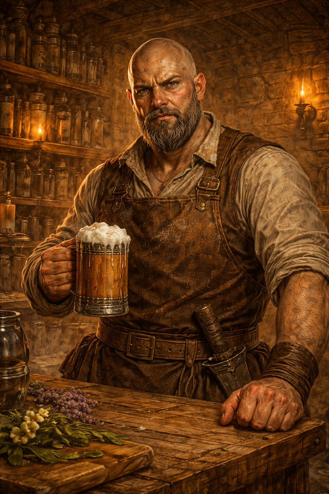

Nästan två meter lång, extremt bred och kraftigt byggd med kortklippt hår och ett tjockt, välskött skägg. Ärr löper över ansikte och armar, spår av ett liv som inte spenderades bakom en bardisk. Han bär enkla, robusta kläder under ett kraftigt läderförkläde och talar med en djup, göteborgsk dialekt.
Roscoe driver The Dogwater Inn, ett slitet värdshus vid vägkorsningen där Triboar Trail möter Miner's Trail, tio mil norr om Phandalin. Han är rakt på sak, lojal och utrustad med en torr humor som skär genom bullret. Han ger korta, tydliga svar, höjer sällan rösten, men alla tittar när han gör det. Han torkar ofta glas medan han pratar och ser igenom lögner snabbare än de flesta.
Under den pensionerade ytan finns en kapabel stridare som saknar äventyrarlivet mer än han vill erkänna. Han har kontakter från sin gamla tid som fortfarande kan dyka upp, och han har sett tecken på att problemen i området börjar likna gamla hot. Hans värdshus fungerar som en informationshub: rykten flödar fritt mellan trötta resenärer, karavanvakter och fulla äventyrare. Tillsammans med sina tvillingbarn Micah och Mara, och fyra sabbande mastiffer, håller han ordning på en plats där världar möts.